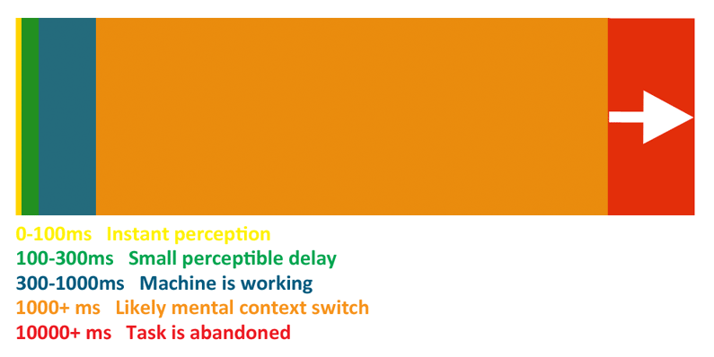
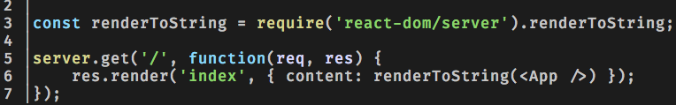

Server Side Rendering (SSR)
en un rato
Que es esto?
Por que?
Velocidad != Percepcion de Velocidad
Flujo ocupando Client Side Rendering (CSR)

O sea...
HTML casi vazio > JS > i18n > JS genera HTML > Se puede mirar algo
Otros problemas
- Workarounds para SEO
- Repainting en mobile muy pesado
Flujo de cargamento SSR

O sea...
HTML ya con i18n > JS agrega interactiones > Listo
Como lograr esto?
No sé! Esto es un Dojo :D
Pero hay tips:

// Talk is cheap. Show me the code...pero no mucho
Enlaces
- How to create the illusion of faster web pages (while also creating actual happier users)
- http://blog.teamtreehouse.com/perceived-performance
- Making Netflix.com Faster
- Redux Server Rendering
- Server side rendering with React and Express
- Guía paso a paso para crear una Isomorphic app con React, Express y ES6